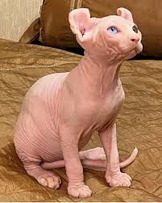

Mais Raros
Essas são as espécies mais exóticas e exuberantes encontradas pelo mundo.
-
Lince Ibérico

Lince Abutre Também conhecido como liberne, gato-cravo e lobo-cerval, o lince-ibérico, cujo nome científico é Lynx pardinus, é um animal muito raro, endémico da Península Ibérica, isto é, existe apenas em Portugal e Espanha, e possui uma distribuição geográfica muito restrita.
-
Ligre
.jpeg)
A cruza entre leão e tigre resulta em um animal com gigantescas proporções. O ligre é um híbrido, uma mistura de leão e tigre, que resultou no maior felino do mundo. Os "ligres" podem viver até 20 anos e tornam-se felinos de porte maior do que seus pais. Existem cerca de 10 "ligres" vivos no mundo.
-
Sphynx
esse é o Sphynx, um gato único! Os gatos da raça Sphynx podem causar certa estranheza quando os vemos pela primeira vez, mas essa aparência diferente dos demais gatos não interfere em nada, é um gatinho como qualquer outro em termos de comportamento. Eles são muito carinhosos e brincalhões.
raças de gatos
| Conheça algumas | ||
|---|---|---|
| Nome | Origem | Aparência |
| Sphynx | Toronto | Olhos grandes, orelhas pontudas e rosto afinado. |
| Siamês | tailândia | A pelagem do Siamês é curta e lustrosa ficando rente ao corpo. |
| Munchkin | Luisiana | é um gato de pernas curtas, costas geralmente um pouco mais longas. |
| Persa | Irã | Sua pelagem é extensa, solta, quase esvoaçante. |
| Tabela descritiva | ||